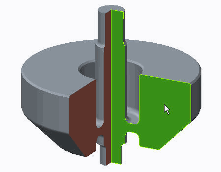
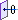
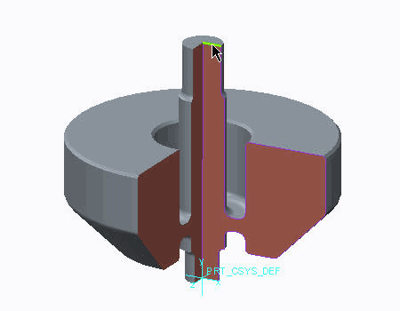
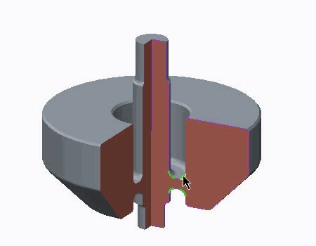
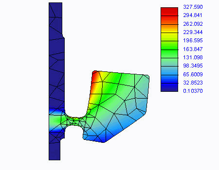
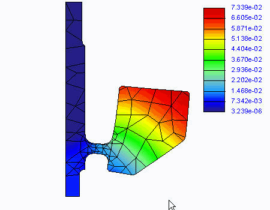

练习: 了解 2D 轴对称
目标
成功完成此练习后，您将能够：
- 使用 2D 轴对称模型类型设置模拟。
假定背景
该模型为飞轮，并且其载荷、约束和材料属性已知。所有这些模拟特征，包括几何，都围绕模型的主轴对称放置。之所以能够使用 Creo Simulate 的 2D 轴对称模型类型，是因为从模型中剖切的任何截面都与以相同方式剖切的任何其他截面曲面操作相同。截面曲面应该处于穿过 Y 轴 (旋转轴) 的 XY 平面。先前创建了模型的坐标系和切削特征，但是，模拟自己的模型时，请记住这些要求。
“关闭窗口”(Close Window) “拭除未显示的”(Erase Not Displayed)
“拭除未显示的”(Erase Not Displayed) 
 Simulate_Modeling\Flywheel
Simulate_Modeling\Flywheel
 FLYWHEEL_2DAXI_SIMULATE.PRT
FLYWHEEL_2DAXI_SIMULATE.PRT
|
|
||
 |
Creo Parametric 用户打开 FLYWHEEL_2DAXI.PRT。 | |
|
|
||
-
任务 1. 定义 2D 轴对称模型类型。
1. 在功能区中，选择“主页”(Home) 选项卡。
2. 单击“设置”(Set Up) 组中的“模型设置”(Model Setup) 。“模型设置”(Model Setup) 对话框随即出现。
3. 单击“高级”(Advanced)。
4. 在“类型”(Type) 部分中，选择“2D 轴对称”(2D Axisymmetric)。
5. 在“坐标系”(Coordinate System) 字段中单击，并从模型树中选择 PRT_CSYS_DEF。
6. 在“曲面”(Surfaces) 字段中单击。在模型中，选择显示的曲面。
7. 单击“确定”(OK)。
8. 当出现提示时，请单击“确认”(Confirm)。
当您从默认的 3D 模型类型更改为任意 2D 模型类型时，将有一个可视显示。这是所选曲面的着色为洋红色的轮廓。

-
任务 2. 定义模型的材料。
1. 在功能区中，选择“主页”(Home) 选项卡。
2. 在“材料”(Material) 组中单击“材料”(Materials)
 。将出现“材料”(Materials) 对话框。
。将出现“材料”(Materials) 对话框。
3. 从材料列表中选择 steel.mtl，然后单击“添加材料”(Add Material)
 。
。
4. 单击“确定”(OK)。
5. 在“材料”(Material) 组中单击“材料分配”(Material Assignment)
 。将出现“材料分配”(Material Assignment) 对话框。
。将出现“材料分配”(Material Assignment) 对话框。
6. 在“曲面”(Surfaces) 字段中单击。在模型中，选择在先前任务中选定的曲面。
7. 校验已将 STEEL 作为“属性”(Properties) 部分中的材料列出。
8. 单击“确定”(OK)。
-
任务 3. 在模型中定义载荷。
1. 在功能区中，选择“主页”(Home) 选项卡。
2. 在“载荷”(Loads) 组中单击“离心”(Centrifugal) 。“离心载荷”(Centrifugal Load) 对话框随即出现。
这是主体载荷，因此不需要任何几何参考。需要大小和方向。
更改方向的选项被灰显并且不可用。Creo Simulate 识别出您正在“2D 轴对称”模型类型下工作。
3. 在“角速度”(Angular Velocity) 部分的“大小”(Mag) 字段中键入 20000。
4. 从“角速度”(Angular Velocity) 部分下拉菜单中选择 RPM。
5. 单击“确定”(OK)。
-
任务 4. 在模型中定义约束。
1. 在功能区中，选择“主页”(Home) 选项卡。
2. 在“约束”(Constraints) 组中单击“位移”(Displacement)
 。将出现“约束”(Constraint) 对话框。
。将出现“约束”(Constraint) 对话框。
3. 在模型中，选择显示的边。
4. 在“坐标系”(Coordinate System) 部分中，校验选定的坐标系是 PRT_CSYS_DEF。
5. 在“X 平移”(X Translation) 字段中，单击“自由平移”(Free Translation)
 。
。
6. 在“Y 平移”(Y Translation) 字段中，单击“固定”(Fixed)
 。
。
7. 单击“确定”(OK)。
-
任务 5. 定义 AutoGEM 控制。
1. 在功能区中，选择“精细模型”(Refine Model) 选项卡。
2. 从 AutoGEM 组中的“AutoGEM 控制”(AutoGEM Control) 下拉菜单中单击“最大元素尺寸”(Maximum Element Size)
 。“最大元素尺寸控制”(Maximum Element Size Control) 对话框随即出现。
。“最大元素尺寸控制”(Maximum Element Size Control) 对话框随即出现。
3. 在模型上，选择用于定义 2D 轴对称模型的相同曲面。
4. 在“元素尺寸”(Element Size) 字段中，键入 20。
5. 单击“确定”(OK)。
6. 从 AutoGEM 组中的“AutoGEM 控制”(AutoGEM Control) 下拉菜单中单击“最大元素尺寸”(Maximum Element Size)
。“最大元素尺寸控制”(Maximum Element Size Control) 对话框随即出现。
7. 从“参考”(References) 下拉菜单中选择“边/曲线”(Edges/Curves)。
8. 按住 CTRL 键并选择模型上所显示的四条边。
9. 在“元素尺寸”(Element Size) 字段中，键入 3。
10. 单击“确定”(OK)。

-
任务 6. 定义并运行静态分析。
1. 在功能区中，选择“主页”(Home) 选项卡。
2. 在“运行”(Run) 组中单击“分析和研究”(Analyses and Studies)
 。将出现“分析和设计研究”(Analyses and Design Studies) 对话框。
。将出现“分析和设计研究”(Analyses and Design Studies) 对话框。
3. 单击“文件”(File) > “新建静态分析”(New Static)。将出现“静态分析定义”(Static Analysis Definition) 对话框。
4. 完成以下步骤：
- 在“名称”(Name) 字段中，键入 flywheel_2Daxi。
- 选择显示在“约束集/元件”(Constraint Set/Component) 和“载荷集/元件”(Load Set/Component) 部分中的约束集和载荷集。
- 单击“收敛”(Convergence) 选项卡，然后从“方法”(Method) 下拉菜单中单击“多通道自适应”(Multi-Pass Adaptive)。
- 在“收敛百分比”(Percent Convergence) 字段中键入 5。
- 在“多项式阶”(Polynomial Order) 部分的“最小”(Minimum) 字段中键入 1，在“最大”(Maximum) 字段中键入 9。
- 在“收敛于”(Converge on) 部分，选择“测量”(Measures)。
- 选择 “列出测量”(List Measures) 。将出现“测量”(Measures) 对话框。
- 选择以下测量：
- max_disp_mag
- max_disp_x
- max_disp_y
- max_disp_z
- max_prin_mag
- max_stress_prin
- max_stress_vm
- max_stress_xx
- max_stress_xy
- max_stress_xz
- max_stress_yy
- max_stress_yz
- max_stress_zz
- min_stress_prin
- strain_energy
- 在“测量”(Measures) 对话框中，单击“确定”(OK) 返回至“静态分析定义”(Static Analysis Definition) 对话框。
5. 单击“确定”(OK) 返回到“分析和设计研究”(Analyses and Design Studies) 对话框。
6. 单击“配置运行设置”(Configure Run Settings)
 。将出现“运行设置”(Run Settings) 对话框。
。将出现“运行设置”(Run Settings) 对话框。
7. 默认情况下，结果和临时输出目录将在工作目录中设置。两种分析都储存在此位置。单击“确定”(OK)。
8. 在“分析和设计研究”(Analyses and Design Studies) 对话框中选择 flywheel_2Daxi，然后单击“开始运行”(Start Run)
 。单击“是”(Yes) 以运行交互诊断。
。单击“是”(Yes) 以运行交互诊断。
9. 分析完成后，单击“显示研究状况”(Display Study Status)
 查看汇总报告。
查看汇总报告。
10. 关闭所有对话框并返回至“分析和设计研究”(Analyses and Design Studies) 窗口。
-
任务 7. 创建结果窗口并检查结果。
1. 在“分析和设计研究”(Analyses and Design Studies) 窗口中选择 flywheel_2Daxi。
2. 单击“审阅结果”(Review Results) 。将出现“结果窗口定义”(Result Window Definition) 对话框。
3. 完成以下步骤：
- 校验已将“条纹”(Fringe) 选定为“显示”(Display) 类型。
- 单击“数量”(Quantity) 选项卡。
- 校验“应力”(Stress) 已被选定。
- 从下拉菜单中选择 MPa。
- 从“分量”(Component) 下拉菜单中选择 von Mises。
- 单击“显示选项”(Display Options) 选项卡。如图所示完成字段。

4. 单击“确定并显示”(OK and Show)。
5. 检查 von Mises 应力条纹图。请注意，表示位于单个平面而非 3D 模型中。在围绕 Y 轴的 360 度的任何其他截面中，此截面曲面中的应力都是相同的。
6. 创建最大位移的另一个结果窗口，并检查显示的结果。
7. 单击“文件”(File) > “退出结果”(Exit Results) 返回至 Creo Simulate。在“消息”(Message) 对话框中单击“否”(No)。
8. 在“分析和设计研究”(Analyses and Design Studies) 对话框中，单击“关闭”(Close)。
9. 单击“文件”(File) > “管理会话”(Manage Session) > “拭除当前”(Erase Current) 以关闭显示的窗口，并从内存中拭除模型。当提示您确认时，请单击“是”(Yes)。
练习就此结束。